Stack Overflow Data - Trends over Time from 2017 to 2020 Surveys
Yu Huang
In this post I use the StackOverflow survey data from 2017 to 2020 to analyze the following trends over time.
- What languages were most popular in each year?
- What databases were most popular in each year?
- What countries were most popular in each year?
1. What languages were most popular in each year?
The following tables show the top 10 programming languages in 2017, 2018, 2019, and 2020
respectively.
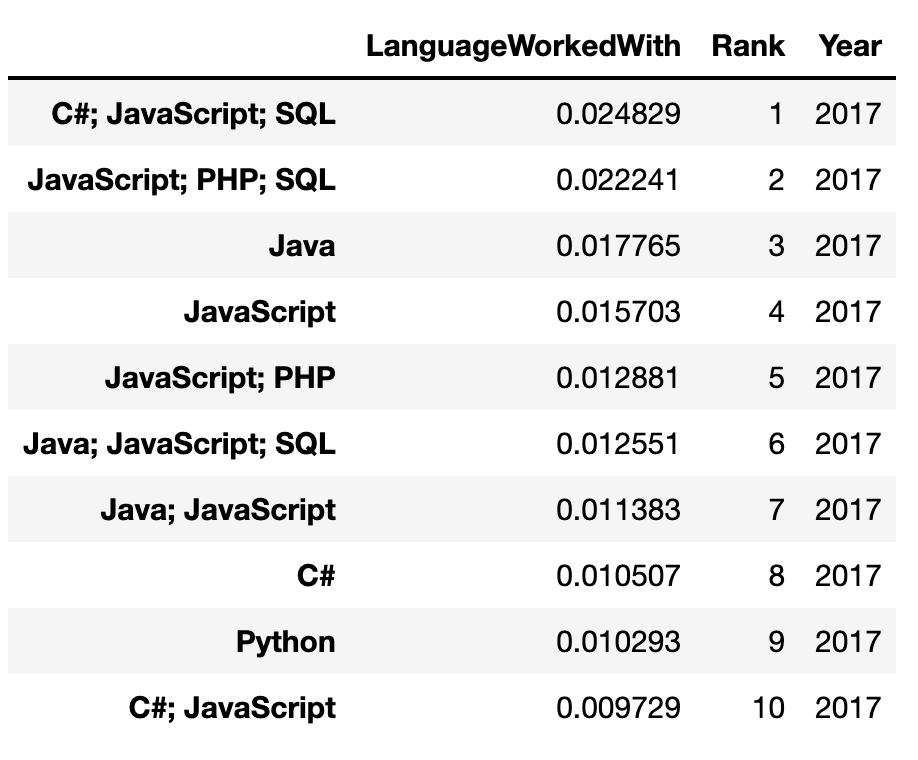
Table 1: Top 10 programming languages in 2017
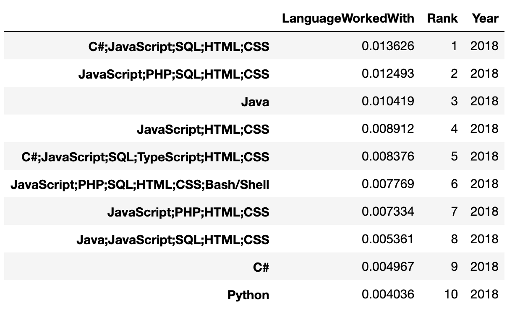
Table 2: Top 10 programming languages in 2018
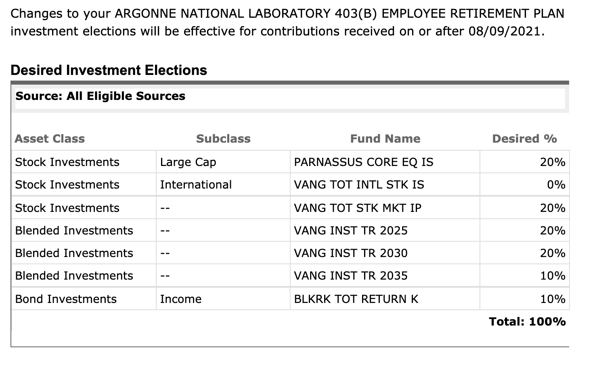
Table 3: Top 10 programming languages in 2019
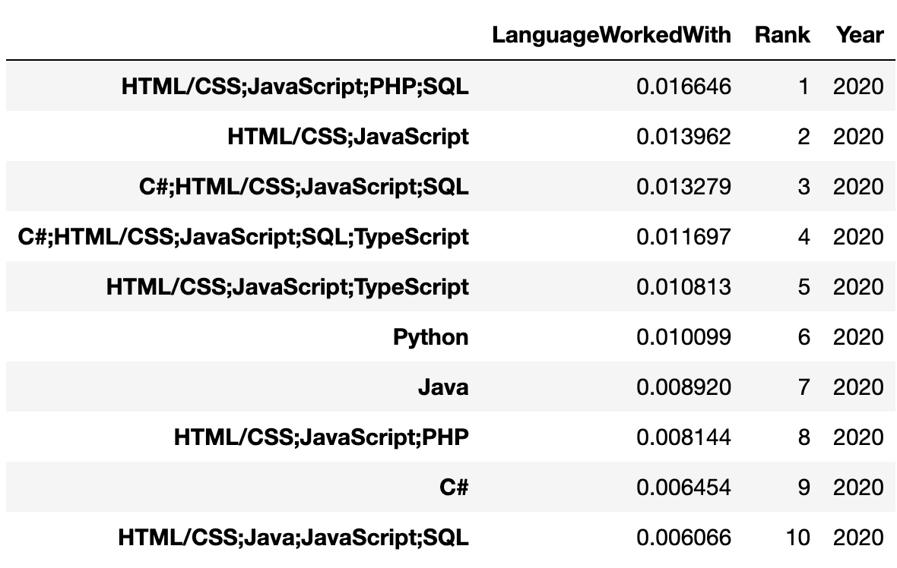
Table 4: Top 10 programming languages in 2020
The following tables and bar charts show the ranks of the programming languages
Python and Java in terms of percentages of users.
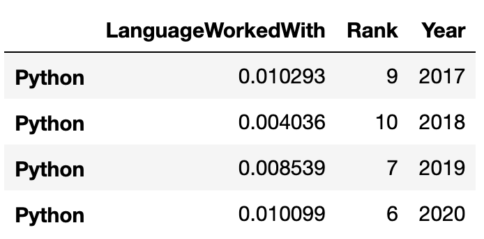
Table 5: Python ranks from 2017 to 2020
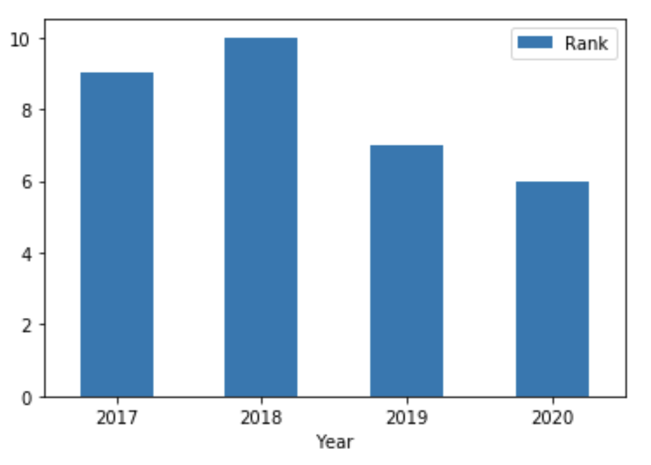
Figure 1: Python ranks from 2017 to 2020
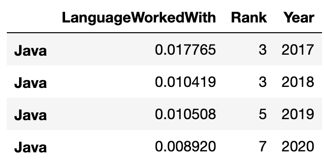
Table 6: Java ranks from 2017 to 2020
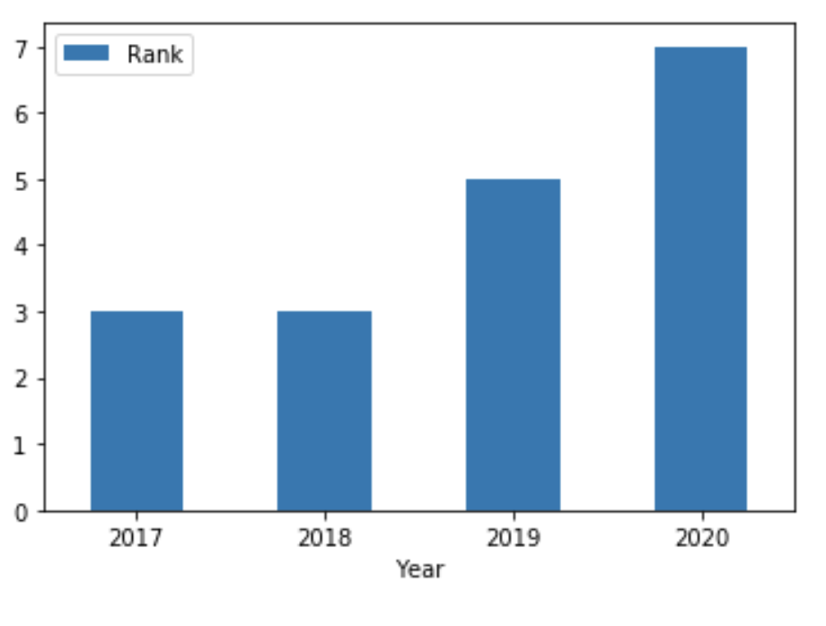
Figure 2: Java ranks from 2017 to 2020
It can be seen from the above tables and bar charts that Python becomes
more and more polular over time, while the popularity of Java decreases
over time.
2. What databases were most popular in each year?
The following tables show the top 10 databases in 2017, 2018, 2019, and 2020
respectively.
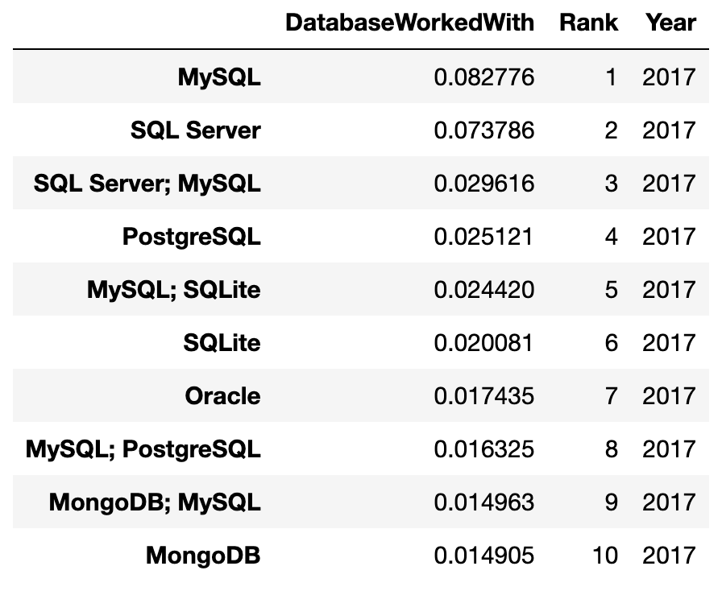
Table 7: Top 10 databases in 2017.
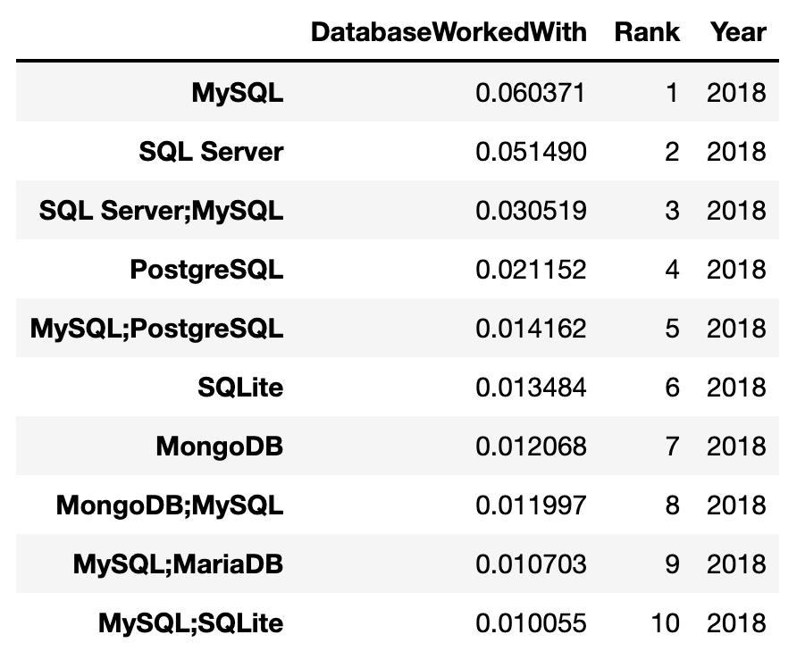
Table 8: Top 10 databases in 2018.
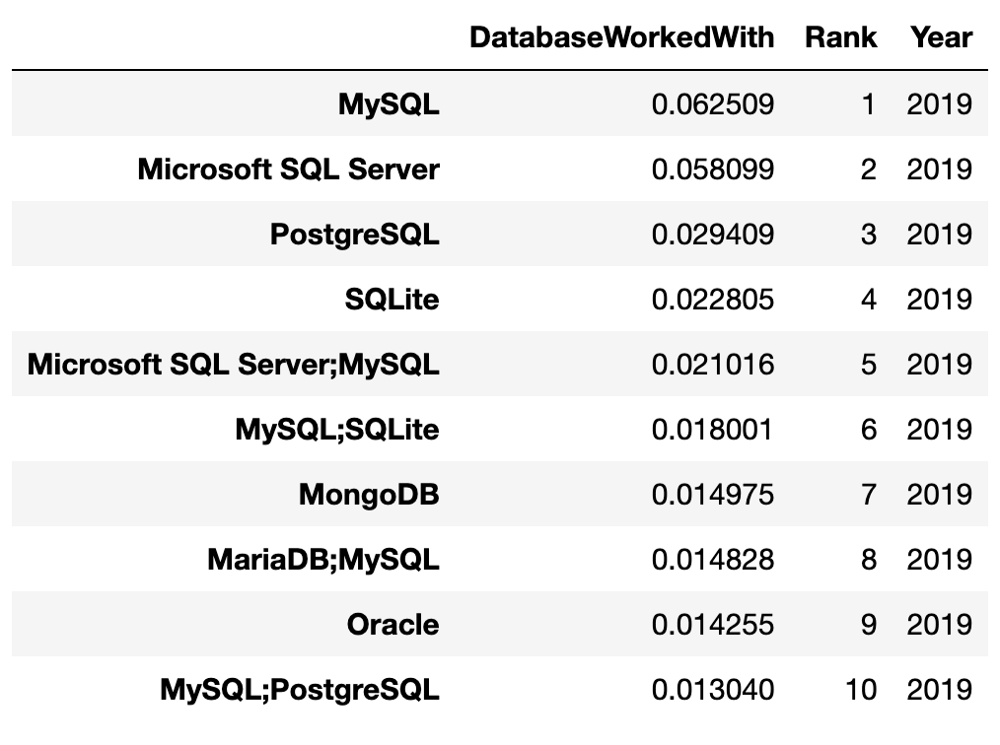
Table 9: Top 10 databases in 2019.
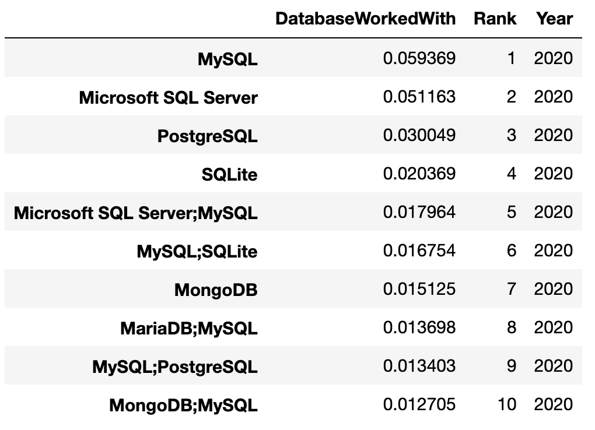
Table 10: Top 10 databases in 2020.
The following tables and bar charts show the ranks of the databases
Oracle and PostgreSql in terms of percentages of users.
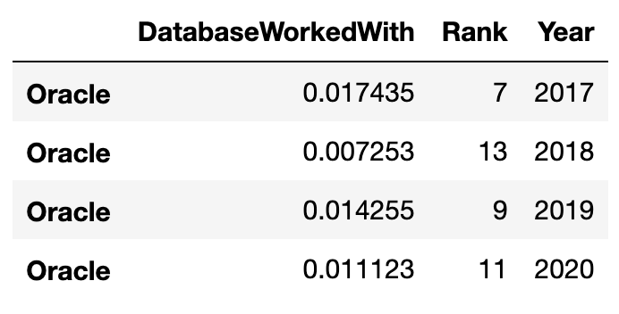
Table 11: Oracle ranks from 2017 to 2020.
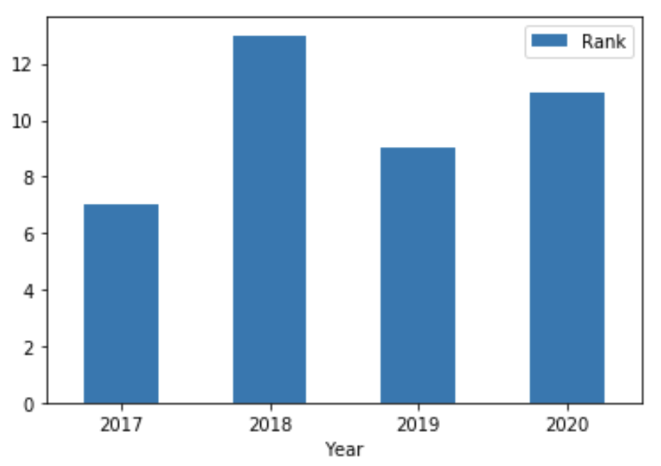
Figure 3: Oracle ranks from 2017 to 2020.
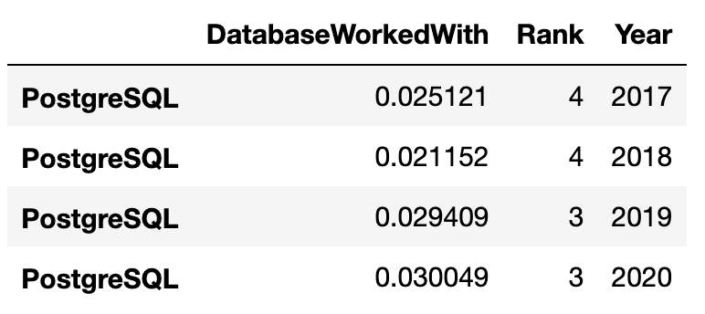
Table 12: PostgreSql ranks from 2017 to 2020.
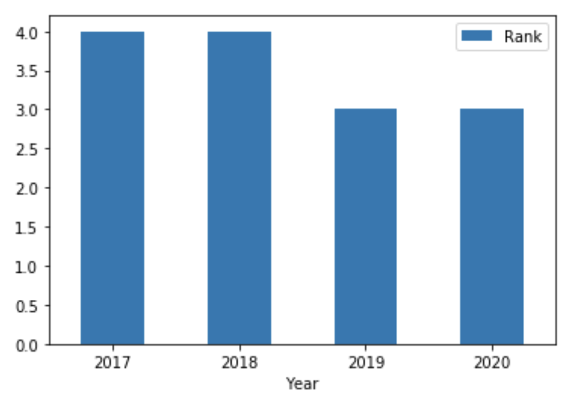
Figure 4: PostgreSql ranks from 2017 to 2020.
It can be seen from the above tables and bar charts that PostgreSql becomes
more and more polular over time, while the popularity of Oracle decreases
over time.
3. What countries were most popular in each year?
The following table show the top 10 countries in 2020.
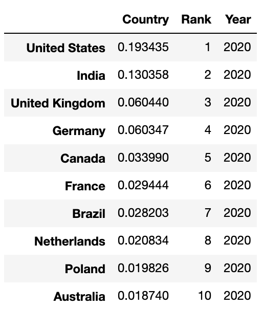
I observed that the top 10 countries remain the same in the last 4 years from 2017 to 2020.
References
Jupyter notebook for Project 1